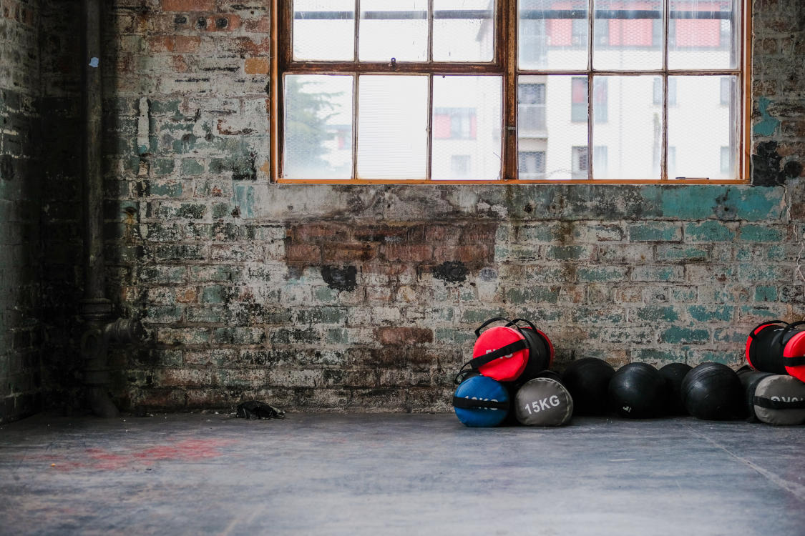
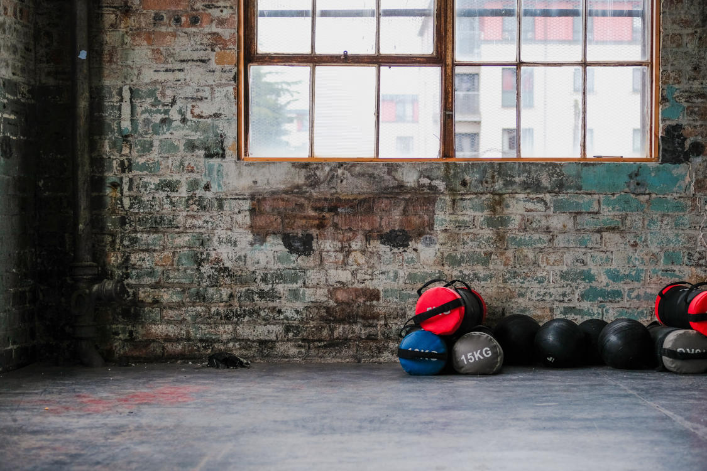

The Fundamental Squat
We all used to be amazing at squats. There was a day and age where we had all
the flexibility, strength and form to perform proper squats. I don't ever remember being able to
do that, you say? And to that, we ask, have you ever seen a toddler squat? - If you've never taken
the opportunity to watch them as they squat down to pick up a toy or some random object off the floor,
we highly recommend that you do. We have a lot of things to remember from our toddler selves that we
unfortunately end up forgetting as we grow up from childhood through to adolescence and adulthood. As
we grow up, our opportunities to move naturally are gradually removed from our daily lives. Eventually,
we just forget how to move properly add efficiently. Think about it, as an adult, how much time do you
have to play? How much time do you spend standing up a day?
The squat is a fundamental
and profound part of our learning and development as toddlers. It is a fundamental part of our
kinaesthetic education that extends into many other types of motions, such as walking, running, jumping,
lifting, etc. If you're new to fitness or a complete beginner to squats, We're willing to bet you can't
squat, or if you can, you're unbalanced and not very comfortable or balanced getting into the position.
At CKC Lifts, we believe in returning to the fundamental movements that the human body was designed
to do.
A Breif History of the Squat
We've all heard it somewhere, on the news, something we read, perhaps a podcast. - The
story about how our ancient counterparts used to be fitness beasts and they were always moving around and
active. This is fake news. Yes, our ancient counterparts were hunter gatherers, but they weren't always
on the move. In fact, there was a lot of rest involved. Food was few and far between, and hunting and gathering
was a collective group effort that demanded a lot of energy. So if you weren't finding food, you were resting.
Riddle us this. Did we have chairs as hunter gatherers? Did we have homes? No? - Okay, next question. Have
you ever sat on a cold hard floor? After a while it starts to get pretty uncomfortable. It begins to put a
lot of pressure on your pelvic floor, and depending on how flexible you are, a lot of strain on your hips.
Our ancestors avoided this altogether by squatting. This is how they sat around, they squatted. Think about it,
they would have had tough and callused feet that could handle most terrain. If it was cold, they would have lost
the least amount of heat through conduction because while squatting, they would have the least amount of
body surface area exposed.
It was once we started settling down and farming that we started having problems. The great conversion to
agriculture introduced back problems such as herniated disks, arthritis, bone spurs, and poor posture. Though being
farmers allowed us to have a more steady food source, it allowed us to do a lot of other things as well, such as make
furniture to sit on and houses to live in.
CKC
CKC stands for closed kinetic chain. It's honestly a lot fancier sounding than it is.
The best way to describe it is like this: Any exercise where the end of your limbs can move freely
is not an CKC exercise. For example, a squat is a closed kinetic chain exercise (and a compound
movement at that, meaning it involves multiple joints). With a squat, your feet are planted
firmly on the ground and unable to move. The extension mainly occurs through your ankles, knees,
hips, and back, where your calves, quads, gluts, and spinal muscles pull on your joints to bring
you from a squatting position to a standing and neutral position. By contrast, exercises such as
leg extensions are OKC, or open kinetic chain, exercises. The end of your limb moves freely in this
exercise and it is a simple and isolated movement (not involving multiple joints).
Open kinetic chain exercises can mess you up if you're not careful. The reason for this is because
they are isolated movements. Bodybuilders use these a lot to focus heavily on individual muscles,
because their goal is to get as big as possible. The problem with this is that you can create
imbalances between your muscles. This is how you end up with knee or hip pain. Because you have
one muscle that becomes much stronger than other muscles in the group, your joints can end up
strained and slightly out of position, causing other muscles to compensate in an attempt to correct
the issue you're having. Before you know it, you've got ridiculously tight hamstrings and your
lower back has never felt worse. This is because you are teaching your muscles to move as individual
components when they were never designed to behave or move that way. Muscles work in groups, which
is why exercises like the squat are so powerful and have demonstrated to reduce joint pain when
used correctly as a rehabilitative exercise.
Health Benefits
You will see a lot of benefits, but let's outline some of the key ones.
- Your cardiovascular health will improve tremendously. Squats are a physically
demanding exercise, and your body will learn how to cope with the demand.
- Your lung capacity will improve. Squats demand oxygen, and a lot of it, especially
when it comes down to heavy weights or high rep ranges.
- You will become stronger, and not just in your legs. Of course, you're going to
notice your legs will become stronger first, but because squats are a compound
and demanding exercise, you will use other muscles without knowing it including
your abs and back.
- You will feel happier. Squats have a weird psychological effect because you are
reawakening a long lost neuropathway. You might even have childhood memories pop in
to your head.
- You may notice a reduction in back and hip pain as you progress with your squatting.
- You will start to crave the endorphine release that comes along with a good squatting session,
and as a result, you will feel more motivated to come to the gym.
Benefits to Other Excercise and Sports
Naturally, your exercise and sport performance will improve. Squats are an
excellent tool to explore if you're already an athlete and it can have an incredible
synergistic effect on your performance.
Distance runners can run longer because their muscular strength and lung capacity have improved.
Footballers and sprinters can move and and accelerate faster resulting from their improved neurokinetic
pathways. Don't believe me? Come and join us, we implore you.
We have many athletes that use us as a supplement to their existing sport, and they would be more than happy
to vouch for the benefits that come along with our sessions. Feel free to contact us and ask!
How to Properly Squat
In order to determine how your body squats best, you have to determine whether your hips are anteverted
or retroverted. All those terms mean is whether your femur connects to your hips at a forward angle or not.
How do you determine this? - With a seated and prone test. Sit down in a chair and see how much you can externally rotate
your leg. External rotation is getting your leg to point in the direction of your other leg. Then see how much you can
internally rotate your leg. Internal rotation is getting your leg to point away from the other leg. Do this one leg at a
time. Do this same test while laying on your belly (prone position) with your knee bent one leg at a time.
If you notice you have a lot of internal rotation and very little external rotation in both the seated and
prone positions, then you have anteversion. If you have anteversion, you will be able to squat comfortably
with your feet roughly should width apart with your toes pointing forward.
If you notice you have a lot of external rotation and very little internal rotation in both the seated and prone positions,
then you have retroversion. If you have retroversion, you will be able to squat comfortably with your feet slightly wider
than shoulder width apart with your toes pointed outward.
If you aren't noticing a significant difference with either internal or external rotation in either position, then you have
textbook hips and your position will fall somewhere in between an antivert and an retrovert.
After this, imagine someone is pushing you from the front at your hips. You should bend at your hips and knees at the same
time until your thighs are parallel to the ground. If you struggle to balance while doing this, extend your arms forward as
a counterweight.
For a great visual guide on how to perform these tests, check out this video.
Squat Variations
Everyone that joins us comes with a different level of experience with squatting.
It honestly doesn't matter what level you are, there are a variety of squats, weighted and
weight-free, that we can use to get you up to speed with proper technique. At Squatology, our
beginners typically begin with weight-free squats, progressing from the traditional body-squat,
to more advanced moves like split-squats and pistol-squats, until they have mastered the key
form and technique before moving on to intermediate and advanced squats. Typically beginners
spend a month or two at this stage before becoming intermediate.
Our intermediates start doing weighted squats. Our intermediate members progress on to dumbbell squats,
kettlebell squats, sumo squats, and asymmetric squats, again focusing on the correct form while building
the essential strength to move on to more advanced movements like back or front squats. Members can spend
anywhere from one to three months of their journey at this stage.
Front and back squats are generally reserved for our advanced members. Don't confuse a heavy squat with an
advanced squat. Heavy does not equal complicated, and more often than not, heavy can just equal stupid. Once
you make it to this stage, you should be comfortable starting out somewhere around 50% of your body weight,
and that is an amazing achievement. If you can progress to squatting your entire body mass or more, you've just become
a one-percenter.
We reserve back and front squats for our advanced members because they tend to me the most unforgiving. If
you make a mistake here, it can lead to serious injury and a lengthy rehabilitation. You must learn essentials.
This is a journey.
 
